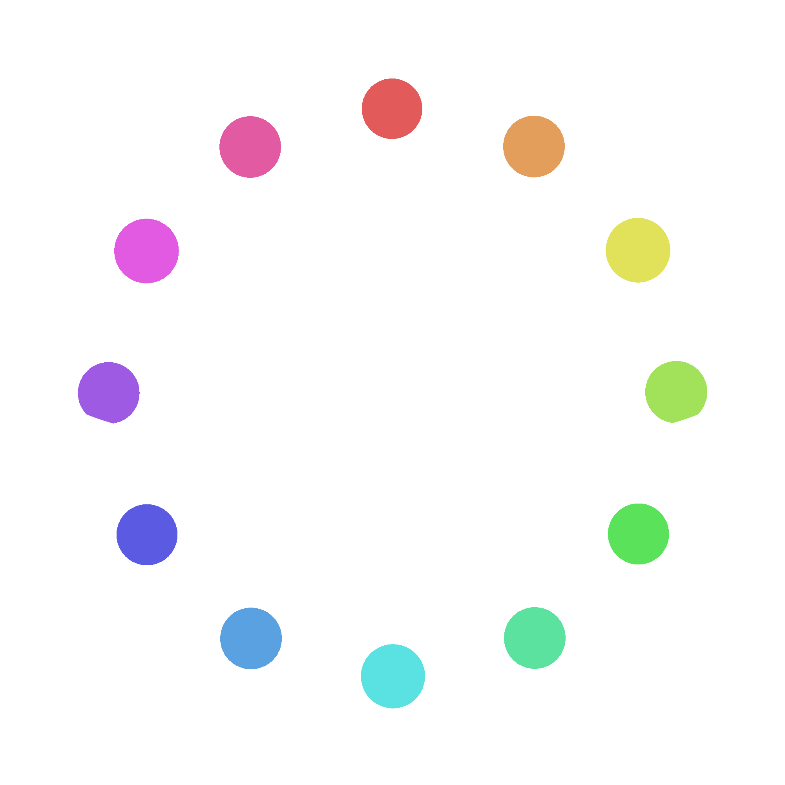

DodecaTone (4.0)
TONIC:
Shift TONIC Left
C
Shift TONIC Right
Shift TONIC Left
Select a pattern
Shift PATTERN Left
Shift PATTERN Right
Shift TONIC Right
From

To
Shift PATTERN Left
PLAY PATTERN
Shift PATTERN Right
From
To
Settings:
Sharps:
Animation:
Colors:
Indicators:
Autoplay:
 DodecaTone (4.0)
DodecaTone (4.0)